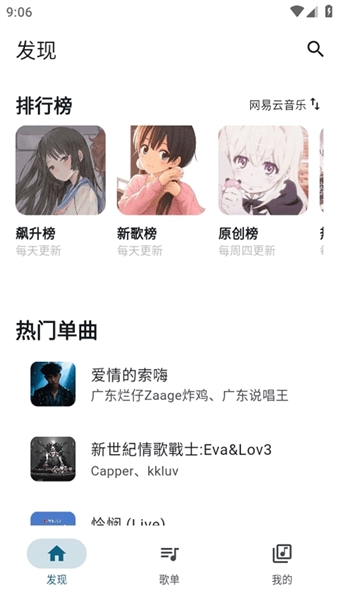
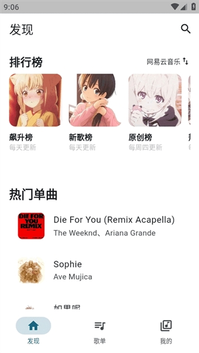

你以为它只是个聚合搜歌工具？摩比音乐里藏得真深的那些冷门玩法
摩比音乐很多人用来搜歌下歌就完了，但翻底之后发现：自定义下载到 SD 卡、WebDAV 云同步备份、锁屏快捷切歌——这些功能藏在不太显眼的位置，用对了体验能提升一大截。
引子：大家普遍怎么用它
身边朋友用摩比音乐，十个有八个就是冲着它那"一次搜好几条音源线路"来的——这也是它的官网首页最显眼的功能卖点。输入歌名，QQ 音乐、网易云、酷我、阿哔……几条线同时并行查，哪条有版权、哪条音质好、哪条能直接下，一眼就能比出来。搜完要么在线听两句，要么挑个 FLAC 下到本地——流程到此结束，锁屏一关，下次打开又是搜同一首歌。
我之前也是这么用的。直到有一天换了 128G 存储的新手机，发现内部空间装完应用和微信缓存就剩不下多少了，想把下载的歌挪到 SD 卡上——翻遍了设置没找到选项，以为这功能根本没有，差点就卸载换别的播放器了。结果顺着一个"下载设置"里藏得很深的入口点进去，才发现这 App 的"下载"模块底下还有好几个开关是默认没开的——还没装的读者可以从官方下载拿一份试试。
挖掘一：下载路径自定义——把歌曲直接存到 SD 卡
默认情况下，摩比音乐下载的歌曲都存在手机内部存储的 App 专用目录里，普通文件管理器还不一定能轻松找到。但如果你手机插了 SD 卡，或者想让下载的音频被其他播放器（比如 Poweramp、Foobar2000 Android 版）直接识别，就必须改路径。
这个功能藏在"我的 → 设置 → 下载设置"里，默认选项是"内部存储"，旁边有个不太起眼的"自定义路径"按钮。点进去后你可以选 SD 卡根目录、也可以手动指定到任意文件夹——但 Android 11 及以上系统会弹一个"允许管理所有文件"的权限请求，这个权限确实比较重，不想给的话就让它存到系统分配的"音乐"公共目录也行，效果差不多。

改完路径之后，新下载的歌曲会直接走新位置，之前下的那些还留在旧目录里不会自动迁移。想统一管理？用手机自带的文件管理器手动复制移动一下就好，文件本身是标准的 MP3 或 FLAC，拿到任何播放器都能识别。
提醒一个坑：SD 卡的写入速度通常比内部存储慢，批量下载 FLAC 24bit 的时候特别明显——一首 30MB 的歌在内部存储可能 5 秒下完，到 SD 卡就要等 20 秒以上。适合长期归档、不频繁新增歌曲的人用，日常快速攒歌还是建议走内部存储。
挖掘二：WebDAV 云同步——歌单换手机不用重新建
这个功能我之前完全不知道存在，是某个旧版本升级之后在设置里突然冒出来的。入口同样在"我的 → 设置"里，往下翻到"云同步"或者"备份恢复"分组就能看到。摩比音乐支持 WebDAV 协议，意味着你只要有一个支持 WebDAV 的服务器（群晖 NAS、坚果云、甚至自己搭一个），就能把歌单、收藏列表、下载记录全部同步上去。
实际用起来很简单：在 App 里填好 WebDAV 地址、用户名和密码，点"立即备份"，几秒钟就能把当前所有歌单推到云端。换手机或者 App 数据被意外清掉的时候，重新装摩比音乐、填同一个 WebDAV 账号、点"恢复"——歌单和收藏就回来了，连跨歌单添加过哪些歌这种细节都能保留。

什么人用得上？经常换手机、或者公司和家里各有一台 Android 设备的人最香。什么人可以无视？单机党、歌单永远只有"我喜欢"一个的人——确实没必要折腾。
挖掘三：锁屏快捷控制——不用解锁就能切歌
这个功能不是完全隐藏的，但很多人没注意到。摩比音乐开始后台播放后，手机通知栏会出现一条常驻通知，上面有播放/暂停、上一首、下一首三个按钮——但锁屏界面其实也会同步显示同样的控件。
前提是通知权限得开着。Android 13+ 首次启动摩比音乐时会弹通知权限请求，如果当时没点允许，锁屏控制就不会出现。去系统设置 → 应用管理 → 摩比音乐 → 通知权限 → 允许，然后重启一次 App，锁屏上就能看到简化版的播放器了。
还有个隐藏细节：某些国产手机系统（小米 MIUI、华为 HarmonyOS、OPPO ColorOS）有自己的后台管理策略，就算通知权限开了，系统也可能在锁屏几分钟后把摩比音乐的后台 Service 杀掉。这时候需要额外去系统设置里给摩比音乐开"自启动"和"后台活动"权限——不开的话，锁屏控制最多撑半小时就失效了，音乐也会跟着停。
挖掘四：聚合搜索的线路偏好——给常用音源排个优先级
摩比音乐默认同时开启 3-6 条音源线路并行搜索，但搜索结果里哪些线路排前面、哪些排后面，其实可以自己调。在"发现"页点搜索框旁边的齿轮图标（或者进"设置 → 搜索设置"），里面有个"音源线路管理"的选项，可以给每条线路打优先级分——具体各线路的特性和适用场景，在MobiMusic文档里有更详细的说明。
举个例子：你是个二次元爱好者，经常搜 B 站上 UP 主原创的音乐，就把"阿哔"那条线路的优先级调到最高，搜索结果里阿哔的条目就会自动排到最前面；如果你主要听老歌，就把"酷我"调高。优先级调完之后搜索体验会精准很多，不用每次都在七八条结果里反复翻找哪个是自己想要的版本。
提醒：线路列表里有些线路是"备用补充"性质的（比如 naiy、洛雪），开启后偶尔会抽风——搜不到歌、或者返回空结果。这时候不要急着删线路，先手动切换一下试试，说不定是那条线路的服务器临时限流了，过几个小时自己就恢复。
哪个坑别踩
说一个我踩过的坑：跨歌单添加歌曲。之前在歌单 A 里打开一首歌的菜单，选"添加到歌单 B"，界面上显示成功了，回到歌单 B 发现根本没加进去。查了好几天才发现这是 v1.4.3 之前的一个已知 bug——歌单数据在 App 内部的 SQLite 数据库里，某些操作路径下同步会失效。
后来的解决方式很简单：升级到最新版就行。摩比音乐的版本更新一般在"设置 → 关于 → 检查更新"里能手动触发，或者到应用市场覆盖安装——歌单和收藏数据都存在 App 专属的数据目录里，覆盖安装只替换 APK 文件不会碰这个目录，所以放心更。
但有个例外：卸载重装在某些 Android 版本上会把 App 数据目录清掉。如果不确定自己的系统会不会这样，升级之前先清缓存别卸载，或者先开 WebDAV 备份一把再动手。
收尾
摩比音乐的定位确实是"搜歌下歌工具"没错，但它在基本功能之外藏的这些东西——自定义路径、WebDAV 同步、锁屏控制、线路优先级——都是那种"不用的时候觉得可有可无，真用上了就发现离不开"的进阶玩法。把它用透，不只是搜歌更快，整个听音乐的体验都能顺很多。整理这份资料时用到的所有文档，我分别放在了GitHub、Gitee和GitCode上，国内网络访问不顺畅的时候可以换着看。